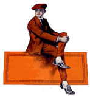

|
|
| Sunga Rose - vocals & ukulele Sunga was raised on a diet of musical theater, 70s folk revival, funk and the Beatles. In other words, she has been genre-confused since childhood. Then she heard Mildred Bailey and her life was changed forever. Since then she has immersed herself in the music, fashion, and culture of the Jazz Age. Major influences are the aforementioned Miss Bailey, Lee Morse, Annette Hanshaw, Connee Boswell, Ruth Etting, Bing Crosby, and the wonderful Cliff Edwards (aka Ukulele Ike). These days she is thrilled to be strumming her beautiful Paddlele made by Joel Eckhaus of Earnest Instruments. She also has a vintage 1930s concert ukulele by Echo-Uke. |
|
| Carey Rayburn - cornet, flugelhorn & percussion Carey trained under world renown Trumpeter Allen Vizzutti as well as David Gordon, Principal Trumpet of the Seattle Symphony. Having been kicked out of the University of Washington with a Bachelors degree in trumpet performance and a resounding "Stay out!" from the administration, Carey has since found his way into several notorious clubs around town playing with a cavalcade of different musicians. As a freelance musician in Seattle he plays in several groups around town and does studio work as well as writing pieces and doing arrangements. However, from Mariachi to Klezmer, Big Band Swing to Classical, he hasn't found anything quite as alluring as the likes of making music with Miss Rose and Her Percolators. |
|
| Hugh Sutton - piano Hugh Sutton has been playing accordion & piano in Seattle longer than he cares to remember. Were a list compiled of the folks he has played with it would read like a phonebook (remember those?), but some of the luminaries Hugh has had the fortune to play with are: Zazou, Circus Contraption, Baby Gramps, Dudley Manlove Quartet, Iron Composer, Mummery, Hanuman, Jack Cook & Reggie Miles. He is also currently playing with Maria Gitana (Flamenco Dancer) & Manuela Horne (Yodeling Dominatrix). Hugh is excited to join the ranks of Miss Rose & her Rythm Percolators! |
|
| Honorary Percolator | |
| Clayton Murray - piano & tuba |
|
| Former Percolators | |
| Fred Van Doren - piano Fred tried to be serious. Really. He studied classical music and conducting and learned how all the great composers died. Then he discovered that playing rock and jazz were much more fun. The old Germans shook their shaggy heads, but it was too late. He has been having fun ever since, and when he learned that Seattle had a band devoted to the (mostly) happy music of the 1920s and 30s, he sold his car and moved West to percolate. |
|
| Ericka Kendall - upright bass Ericka picked up the bass more than 20 years ago, and nobody ever told her it was okay to put it back down. After years of classical performance, she was unable to resist the dark allure of the orchestra pit for various opera and ballet companies. Playing European folk music and steamy tango in plain sight of the audience drew her back to the stage before she was finally called upon to lay down the low-end rhythms for Miss Rose. Though the Percolators frown on her desire to wear her star-shaped sunglasses during shows, the spirit of Bootsy Collins inhabits every note she plays. |
|
| Holly Michelle Eckert - piano & violin Holly's fate as a professional musician was sealed once her perfect pitch was discovered at age four. Falling in love with the Glen Miller band as a youngster, but finding no jazz music teachers in her small Michigan town, she pursued a classical music education until she coaxed a doctorate out of the Eastman School of Music. Since moving to Seattle in 1997, she has played an impressive array of wacky gigs, on both violin and piano, from the Seattle Symphony (definitely the wackiest), to gypsy jazz quartet gigs, to B movie soundtracks. |
|
|  | Mark Bentz - cornet & percussion Mark's golden cornet tones can be heard on our debut CD, Who Walks In. Check out his Herb Alpert style brass band, Rat City Brass. |
| Dayton Allemann - piano Dayton is no longer a Percolator but his beautiful artistry on the piano can be heard on our debut CD, Who Walks In. |